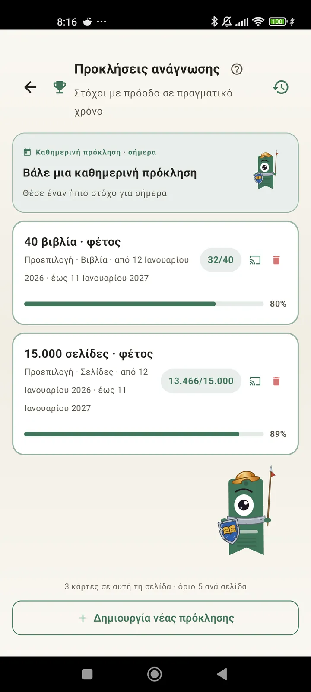

Γνώρισε τον εαυτό σου ως αναγνώστη
Προκλήσεις, Bingo, widgets και άλλες λειτουργίες για να βγάλεις τα μέγιστα από την ανάγνωσή σου. Νέο στην 3.7: widgets προκλήσεων και Bingo.

Προκλήσεις ανάγνωσης
Βάλε στόχους με βάση σελίδες, σερί ή είδη. Έως 15 ενεργές προκλήσεις δωρεάν, απεριόριστες με Pro. Συν μια προσαρμόσιμη ημερήσια πρόκληση που δεν μετράει στο όριο.

Ημερήσια πρόκληση
Ένας νέος στόχος κάθε μέρα. Ολοκλήρωσε την πρόκληση πριν από τα μεσάνυχτα για να κρατήσεις το σερί σου.

Bingo ανάγνωσης
Δύο νέα Bingo κάθε μήνα με θεματικά τετράγωνα. Συμπλήρωσε σειρές, στήλες ή ολόκληρη την κάρτα.

Εβδομαδιαία σύνοψη
Κάθε Δευτέρα, μια ματιά στην εβδομάδα σου: σελίδες που διάβασες, συνολικός χρόνος, σερί και σύγκριση με την προηγούμενη.

Μηνιαία ανασκόπηση
Όταν τελειώνει ένας μήνας, το Lecturameter τον συνοψίζει: σελίδες, χρόνος, βιβλία που ολοκλήρωσες, ο ρυθμός σου μέρα με τη μέρα και το βιβλίο του μήνα.

Widget Bingo Pro
Η κάρτα Bingo του μήνα, πάντα μπροστά σου, με τα τετράγωνα που έχεις συμπληρώσει και τις γραμμές που έχεις κάνει.

Widget βιβλίου Δωρεάν
Δες το βιβλίο που διαβάζεις κατευθείαν στην αρχική οθόνη: εξώφυλλο, τίτλος, συγγραφέας, σελίδες και ποσοστό προόδου, πάντα ενημερωμένα. Αλλάζει μέγεθος για να χωράει όπου θέλεις.
Σοβαρά φίλε, η εφαρμογή είναι σαν θεραπεία. Από ένα-δυο σελίδες την ημέρα έφτασα να διαβάζω καμιά 20 σελίδες την ημέρα και βελτιώνομαι συνέχειαΣχόλιο χρήστη, σταλμένο με email

Μηνιαία σύγκριση Pro
Μια γρήγορη ματιά στους τελευταίους σου μήνες χωρίς να ανοίξεις την εφαρμογή. Μπάρες με τις σελίδες κάθε μήνα και τον τρέχοντα τονισμένο, για να βλέπεις με μια ματιά αν τα πας καλύτερα ή χειρότερα από τον προηγούμενο μήνα.

Widget προκλήσεων Pro
Οι ενεργές προκλήσεις σου και η πρόοδός τους στην αρχική οθόνη. Διάλεξε ποιες θα εμφανίζονται από την οθόνη Προκλήσεις.